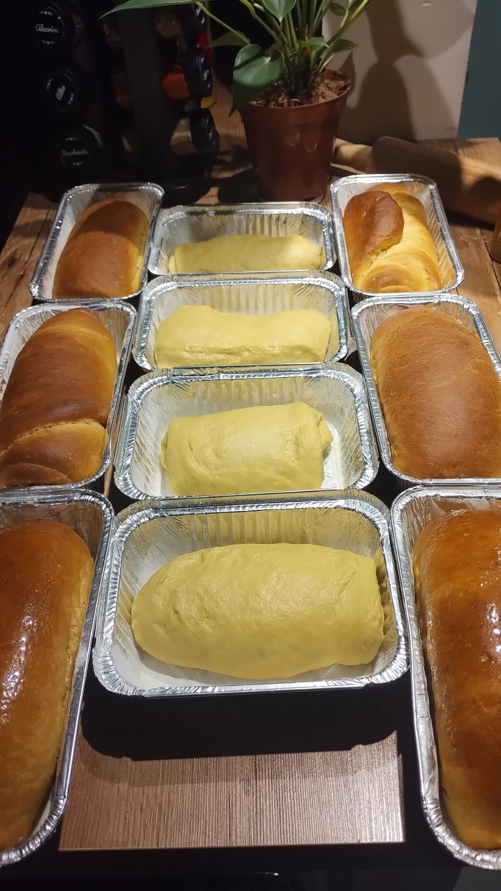

Objetivo do Danilo
Divulgar meu trabalho. Sou padeiro. E, é da venda dos pães, cucas e bolos que eu consigo monetizar minhas ações sociais com moradores de rua, que é de onde eu vim.
Sobre os pães..
Todos os pães são caseiros, são feitos pelo Danilo com muita paixão e dedicação, ele é quem faz todo processo da criação do pão. Ele é quem bate a massa, põe no forno e assa estes pães deliciosos!
Além dos pães!
Fora os deliciosos pães caseiros que o Danilo produz, ele faz bolos e cucas maravilhosas, ambos caseiros também.
Contato
Número: +55 51 9696-6969 Facebook